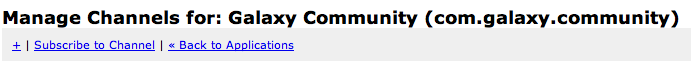
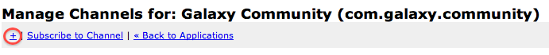

2.3. Channels¶
Remember, in Constellation, channels are synonymous with forums.
2.3.1. Creating Channels¶
From your application’s available actions, choose Manage Channels to begin the channel management/creation process.
Click the “+” from the channel actions menu to begin the process of creating a new channel/forum
Similar to the create application action, this will reveal the create channel form.

- For choose a channel id, e.g., announcements or constellation-announcements
Note
Channel Id’s must be domain name compliant, wildcards: *, are not allowed. The application id will be automatically prefixed to the channel id so there is no need to include it.
- Provide a name for this channel. This name that will be available to users of this forum, e.g., Galaxy Announcements
- As with the channel name, provide a channel description. Again, this will be available to users of this forum, e.g., The place to go for announcements about Galaxy
- Finally, you can set default subscriber permissions on this channel. The default permissions will reflect the default permissions you set when you created the application. If you would like this channel to require different permissions, you can set that accordingly at this time. This permission setting only affects subscribers, the channel’s owner is granted all permissions.
- Once your are satisfied with your channel, click the Add Channel button.
Warning
At this time, once a channel is created it cannot be modified. If you have a typo in your channel name, or description, you will need to delete your channel, which includes all of it’s data if any, and create a new channel.
2.3.2. Channel Management¶
Once a channel is created, you can view it’s details on the channel management screen.
The management screen makes a distinction between channels you own and channels you are subscribed to. Channels you are the owner of you and manage subscriptions on as will as delete.

Channel you own

Channel you are subscribed too
Channels you are subscribed to you can only delete.
Note
Deleteing a channel you are subscribed to only deletes the channel from your applictions available channels, it does not delete the original channel. All write operations you performed on a subscribed channel will be preserverd for the other subscribers and channel owner.
Warning
If you are the owner of a channel, and choose to delete the channel, all of it’s assocaited information will also be deleted. This operation cannot be undone.
2.3.3. Channel Subscriptions¶
Any channel that has at least a read permission can be subscribed to. If you would like to allow someone to subscribe to your channel, providing them the channel id found in the channel detail is all they will need to know. The user will be granted the default permissions on the channel. To this end, you should be careful who you allow to do what to your channels, for example, you should only allow delete permissions to those applications that you trust.
You can change a subscribed applications permissions to a channel at any time by clicking on the manage subscriptions button for the channel.
Note
At this time, we do not allow applications to request extended permissions beyond the default permissions. This is a feature that will be coming shortly. Additionally, we are exploring implementing an additional permssion Admin in addition to Read, Write, Delete.